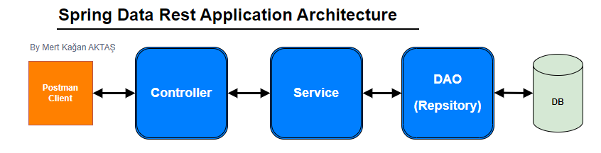
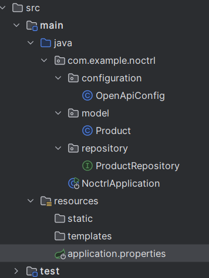
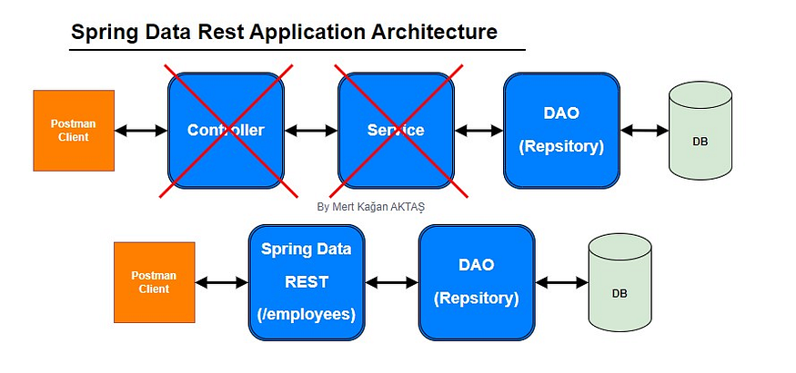
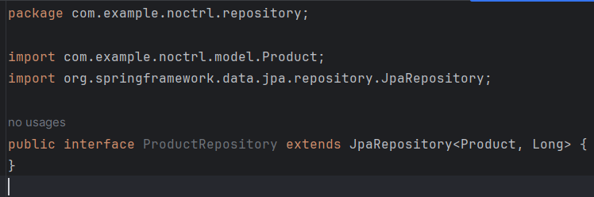
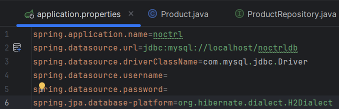
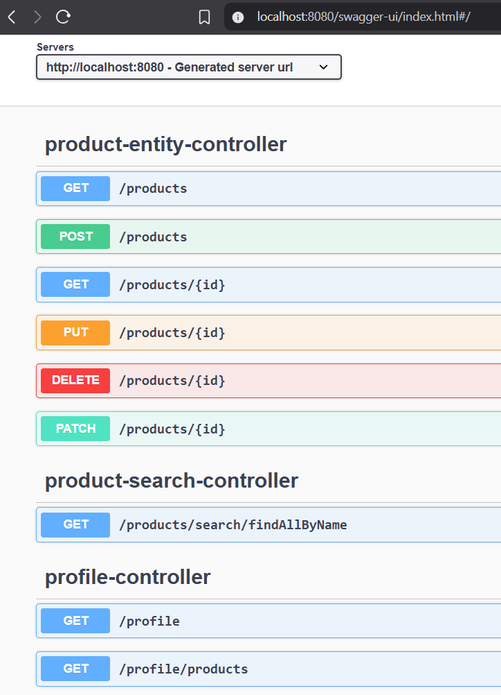

What are the problems?
In typical Spring-based applications, you will see the following architecture:
Traditional Spring Architecture
That means, for every single endpoint, whether it's easy like simple CRUD, or hard ones like creating a report, you will have to create the Controller to handle the endpoints: GET, POST, PUT/PATCH, DELETE.
Then you will have to repeat it on another one, and another one, and another one... But still, hundreds of entities are waiting for the endpoint. And when you have a new entity, you will have to repeat all those steps manually. It's a real hell with no exit.
Solutions
Spring Data REST Solution
Imagine you could remove all the REST controllers. You could remove all of the unnecessary services. After declaring an entity, your only task is to create a JPA Repository to handle it (by extending the JPARepository interface). Nothing more. Sounds like a dream, doesn't it?
But it's possible, by using Spring Data REST.
Spring Data REST Architecture
What Spring Data REST does:
- It scans your project for JpaRepository
- It exposes REST APIs for each entity type for your JpaRepository
- It creates endpoints based on the entity type with a simple pluralized form: change the entity type's first character to lowercase, then add "s" to the end.
Everything is done automatically. No controllers. No services. No pain in the ass anymore.
How can we do that?
When you create a Spring Boot project, remember to add spring-data-rest to the
dependency list:
Adding Spring Data REST Dependency
Here I want to use Swagger (OpenAPI) to show you the result, so I'll create the OpenApiConfig class:
package com.example.noctrl.configuration;
import io.swagger.v3.oas.models.OpenAPI;
import io.swagger.v3.oas.models.info.Info;
import io.swagger.v3.oas.models.info.License;
import org.springframework.context.annotation.Bean;
import org.springframework.context.annotation.Configuration;
@Configuration
public class OpenApiConfig {
@Bean
public OpenAPI customOpenAPI() {
return new OpenAPI()
.info(new Info().title("My API Without Controllers")
.version("1.0")
.description("This is a sample API documented without traditional Spring MVC controllers.")
.termsOfService("http://swagger.io/terms/")
.license(new License().name("Apache 2.0").url("http://springdoc.org")));
}
}A simple entity class is enough for an example:
@Entity
@NoArgsConstructor
@AllArgsConstructor
@Getter
@Setter
@Data
public class Product {
@Id
@GeneratedValue(strategy = GenerationType.IDENTITY)
private Long id;
private String name;
}We have an entity, sure we'll need a Repository interface:
Creating Repository Interface
Extending the JpaRepository brings you enough simple CRUD features. But if you want something more, feel free to write it in the interface, just like this:
public interface ProductRepository extends JpaRepository<Product, Long> {
List<Product> findAllByName(String name);
}Don't forget the application.properties configuration:
Application Properties Configuration
Then it's ready to go. You can start the program, then go to the swagger-ui to see the result:
Swagger UI showing auto-generated endpoints

Detailed endpoint documentation
Now, let's try it by yourself. Happy coding, my fellow brothers.